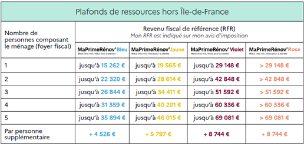
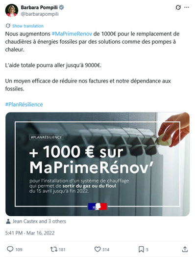
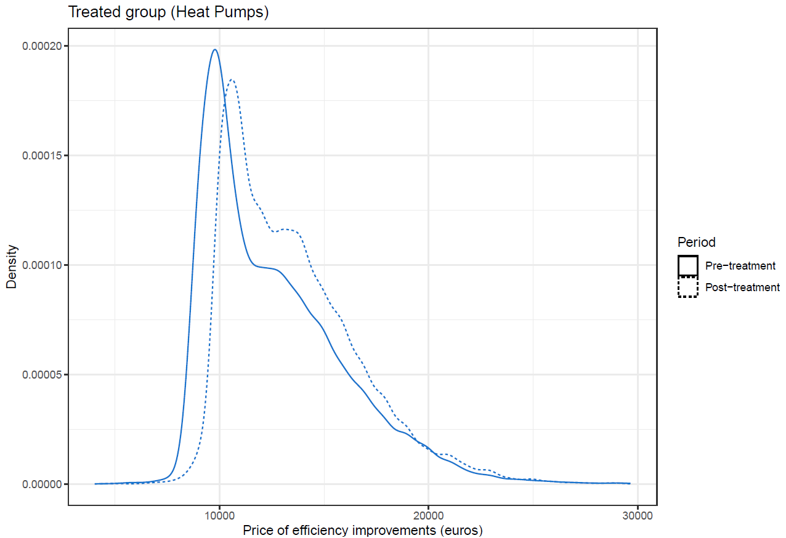
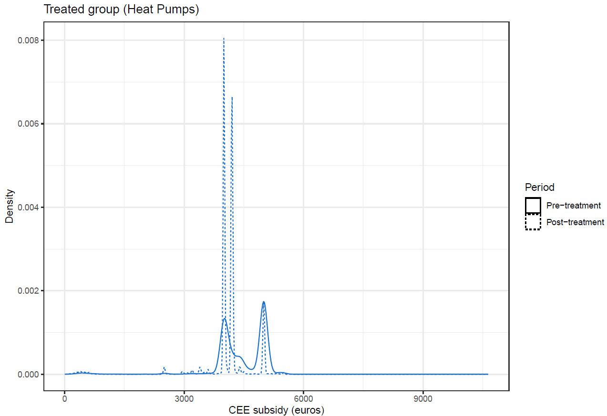
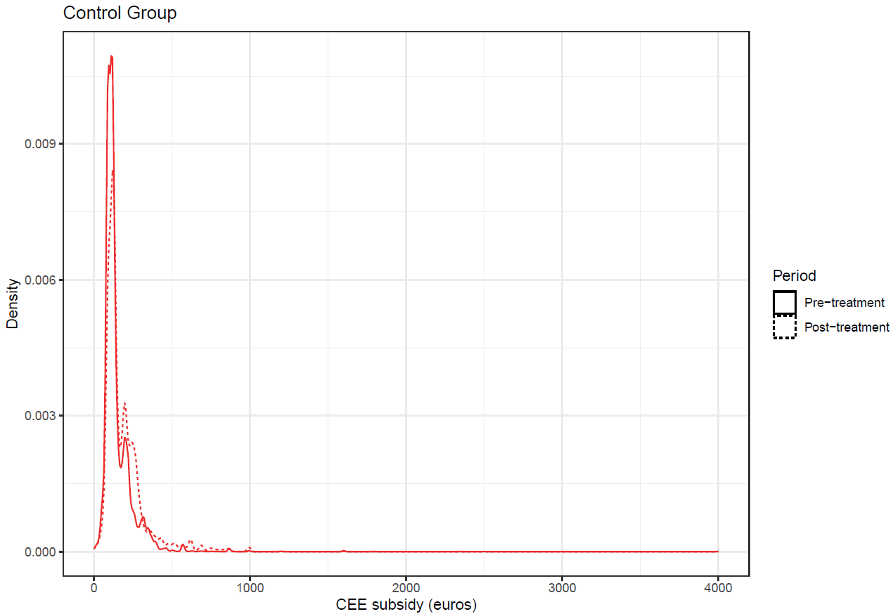
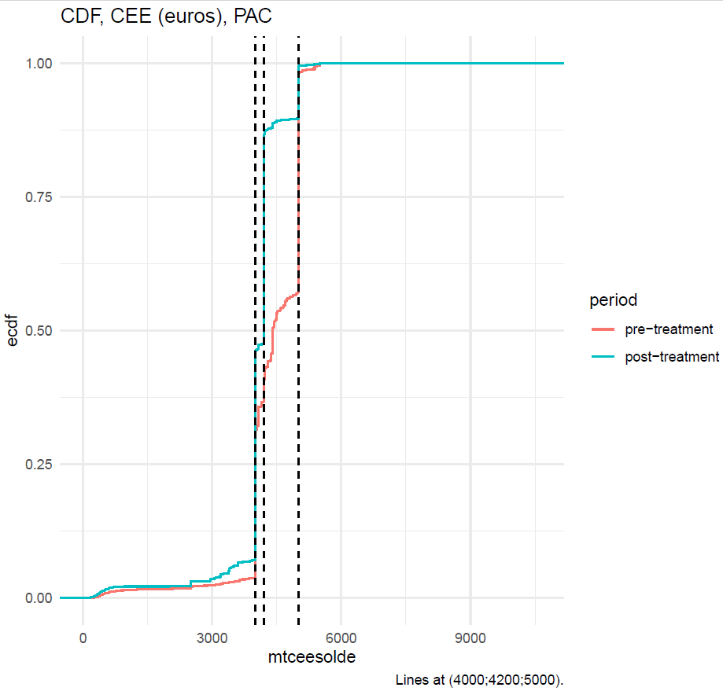

| Nombre de gestes répertoriés dans la base MPR | ||
| Période de 5 mois avant l'augmentation du forfait MPR (15/04/2022) | ||
| Geste | Pré-intervention | Post-intervention |
|---|---|---|
| Groupe de Contrôle | ||
| Chauffe-eau solaire | 9764 | 12407 |
| Chaudière à granulés | 3979 | 6058 |
| Chauffe-eau thermodynamique | 3245 | 5983 |
| Chaudière à gaz THPE | 2573 | 2796 |
| Ventilation double flux | 4444 | 8331 |
| Groupe Traité | ||
| PAC air/eau | 13222 | 24027 |
Strategic Substitution : How Do Quantity Mandates Respond To Price Policies ?
The case of French policies for promoting energy efficiency
lundi 8 décembre 2025
Introduction
Introduction
Policy context & data
Methodology
Descriptive statistics
Results
Conclusion
Annex
–> –>
–>
–>
Green transition policies display a wide variety of overlapping instruments
Whether as a result of multiple market failures and/or political constraints, governments have introduced numerous overlapping policy tools.
See, for example, the case of energy efficiency : taxes, energy efficiency obligations, subisidies, standards, financial support, labelling & information campaigns
The literature is still confliced as to the effects of policy interactions :
- The interaction between the ETS (cap-and-trade) and other policies has provoked much debate, see e.g. Perino, Ritz, van Benthem (2025)’s theoretical review. E.g. : in presence of a fixed supply of GHG allowances, mandating a shutdown of coal power plants may have 0 effects on emissions.
- Stechemesser et al. (2019)’s ex post review of policy combinations finds that well-designed mixes are more effective.
Leveraging a natural experiment : how do price subsidies interact with quantity mandates ?
We leverage a natural experiment to assess the interactions between quantity policies and an increase in subsidies for abatement :
- An increase in public grants for home energy efficiency improvements, in spring 2022.
- This took place in the context of a pre-existing scheme which sets home energy savings targets for energy providers.
- Using an event-study approach, we study the effects of this increase on private investment, improvement prices, and the number of improvements carried out.
Evidence on public & private investment complementarity in general is limited
- Macro-level studies : many macro papers study government spending multipliers (0.5-1, with some evidence for state-dependency), though to our knowledge only a few papers (Eden, Kray (2016) ; Abiad, Furceri, Topalova (2016)) examine public investment shocks.
- Public investment shocks : exploit natural experiments in public investment to show crowding-in (especially R&D) ; effects are linked to credit frictions, i.e. SME investment is crowded-in while large firms are unresponsive or reduce investment.
Preview of the results : extra public support may be offset by higher prices & lower private funding
- We find :
- Small increase in the number of improvements carried out ;
- Approx 1/3 of the increase in grants offset by lower contributions from energy providers ;
- A majority of the increase in grants passed on to improvement prices.
- No significant effect on households’ out-of-pocket renovation expenses.
Policy context & data
Introduction
Policy context & data
Methodology
Descriptive statistics
Results
Conclusion
Annex
Certificats d’Economies d’Energie : savings mandate financed by energy bills
The state sets 4-year targets for energy providers, in terms of energy savings.
Targets are met by certificates of household energy savings.
Households allow firms to accumulate these certificates by signing a form, certifying that the energy supplier played an « active and incentivising » role in carrying out energy efficiency renovations.
- In practice, energy providers (or third parties) will seek out households which may be enticed into carrying out improvements, and thus delivering certificates.
MaPrimeRenov’ : grants for house improvements targeted towards low-income households
- MPR allows households to apply for grants for improvements to their house’s energy efficiency.
- Grants vary depending on the household’s size and position relative to income quartiles

- Grants vary depending on the household’s size and position relative to income quartiles
- From 2020 to March 2025 : 13.9 billion euros of grants.
- 2.1 billion in 2021, 3.1 in 2022.
- MPR may be combined with other aids, up to a maximum of 90% of the price of the improvement.
MPR & CEE designs create opportunities for strategic behaviour
MPR subsidies are defined by administrative decrees, unlike CEE support which only has a floor, but is otherwise left to the energy providers’ discretion.
- Thus, MPR’s design opens the door to strategic behaviours from energy providers, i.e., calibrating their CEE support to households according to the amount already covered by the State through MPR.
The CASD MPR dataset
- The MPR dataset was compiled by the Transition Ministry’s statistical service, based on the internal processing system for MPR applications.
- It provides useful application-level information and link it back to records of individual improvements
- each observation is thus an individual energy efficiency improvement.
- We aggregate the individual improvements in the MPR data into a panel dataset at the Zone d’Emploi level (285 total ZEs in metropolitan France) and at monthly frequency.
Methodology
Introduction
Policy context & data
Methodology
Descriptive statistics
Results
Conclusion
Annex
Identification : an increase in MPR following the invasion of Ukraine
We leverage an administrative decision, announced mid-March 2022, to increase the MPR subisidies for some types of improvements, effective on April 15 2022.
- The MPR increase was part of the French Government’s Resilience strategy in the wake of the Russian invasion and subsequent energy shock.
- The stated aim was to decrease French dependence on fossil fuels.
Estimating the effects of the MPR increase through an event study
- We examine the effects of the increase in MPR grants through an event-study framework.
- Using an estimator robust to heterogenenity in treatment effects (Callaway and Sant’Anna 2021), we study the effects of the MPR change 5 months before/after it was effective.
As our treatment variable is binary (= 1 if the improvement type is concerned by the MPR increase and the date is 15/04/2022 or after), the estimation is similar to, but more robust than, the canonical DiD TWFE regression :
\[Y_{i,t}=\alpha_i + \lambda_t + \sum_{k = -5; }^{5} \gamma_k*D_{i,t-k} + \beta*X_{i,t}\]
At this stage, we are limited in terms of specification choice by the amount of variables available in the CASD dataset. We control for :
- Median fiscal revenue ;
- Share of MPR applicants that are homeowners.
Sample & treated/control group selection
We focus on the lowest income category : i.e. those most likely to be « activated » by the subsidies.
We focus on discrete improvements rather than insulation works, as the former make for more intuitive comparison groups.
- The treated group could include, in theory, all types of improvements which were concerned by the MPR increase of April 2022.
- Thus far : we focus on heat pumps as our treated group, which are the improvement type which 1) benefited from the MPR increase 2) has the highest number of observations.
- The control group includes improvements which were not concerned by the MPR increase.
- We further exclude high performance gas boilers due to the trend in gas prices and explicit policy of reducing their usage.
Descriptive statistics
Introduction
Policy context & data
Methodology
Descriptive statistics
Results
Conclusion
Annex
Substantial increases in the number of improvements are visible irrespective of MPR increases
Pre/post distributions suggest the MPR increase was passed on to prices
Treated group :
Pre/post distributions suggest the MPR increase was passed on to prices (2)
Control group :

Pre/post distributions of CEE are ambiguous
Treated group : 
Pre/post distributions of CEE are ambiguous (2)
Control group : 
Results
Introduction
Policy context & data
Methodology
Descriptive statistics
Results
Conclusion
Annex
Households experienced the expected MPR increase

However, approx. 1/3 is captured by energy providers via lower CEE funding

A large share of the increase in grants ( ~2/3) is passed onto prices

Out-of-pocket expenses for households remained stable

The extra MPR grants did lead to a small increase in the number of improvements

Conclusion
Introduction
Policy context & data
Methodology
Descriptive statistics
Results
Conclusion
Annex
Conclusion
A combination of private and public financing is the default strategy for governments to meet pressing investment needs.
Furthermore, in the context of green transition efforts, there are overlaps of policy instruments.
- E.g. : quantity & price instruments.
- The evidence on the effects of these interacting policies is limited thus far.
Our contribution is to leverage a natural experiment to provide some evidence on how quantity/price policies interact.
- In the case of MPR and CEE, our results suggest that the increase in subsidies partly displaced private funding resulting from the quantity mandate.
Extensions
As this work is still preliminary, there are many avenues for further research :
- Performing the same estimates for other household income levels and/or improvement types
- Examining the price effect : is it an increase in profit margins ? (of heat pump installers ? or makers ?)
- Modelising the strategic interactions that lead to the crowding-out effect.
Annex
Introduction
Policy context & data
Methodology
Descriptive statistics
Results
Conclusion
Annex
Overview of the energy efficiency improvement programmes
France has implemented several programmes to support energy efficiency improvements, of which MPR and CEE are just a few :
| Nature | Description | |
|---|---|---|
| MaPrimeRénov' | Subvention (forfait gradué selon revenus) | Prime forfaitaire selon le type de travaux/niveau de revenus. Introduit en 2020, en remplacement du CITE (crédit d'impôt, en % du prix de l'installation). |
| CEE | Consommateur-payeur | Obligations des fournisseurs d'énergie de contribuer à des cibles de gains d'efficience énergétique (en kW/h cumac) en soutenant financièrement les ménages. En théorie, le coût du soutien aux ménages est répercuté sur les factures. |
| EPTZ | Subvention ? | Prêts à taux zero pour la rénovation énergétique. |
| TVA à taux réduit | Subvention | TVA réduite (5,5%) sur certains produits |
MPR changes in April 2022
MPR and CEE are cumulative, but only up to a point
- The sum of MPR and CEE may not exceed a share of the total cost of the improvement (from 60% to 90%).
- Depending on the generosity of MPR and CEE, this may « mechanically » introduce substitution effects between MPR and CEE.
Summary statistics
| Moyennes, période pre-traitement | ||||||
| period_pre | CEE | MPR | Prix TTC | Reste à charge | Ecart au seuil d'écrètement | RFR |
|---|---|---|---|---|---|---|
| Contrôle | ||||||
| Pre-intervention | 858 | 4279 | 6821 | 1685 | −1002 | 17617 |
| Post-intervention | 797 | 4451 | 7053 | 1804 | −1099 | 17463 |
| Traité | ||||||
| Pre-intervention | 4446 | 3979 | 12652 | 4227 | −2962 | 17149 |
| Post-intervention | 4081 | 4962 | 13580 | 4538 | −3180 | 17236 |
Trends : price & number of works
[Ventil2 = VMC double flux ; cag = Chaudière à granulés ; cet = Chauffe-eau thermodynamique ; ces = Chauffe-eau solaire] 
Grants were increased for some, but not all, eligible home improvements
- This non-exhaustive table shows the temporary increase in grants for some of the key improvement types.
Distribution des seuils d’écrêtement
- Rappel : la somme des primes MPR + CEE ne peut pas dépasser 90% du prix TTC.
- Sur la période pré-intervention, parmi les travaux où le cumul des aides impliquant un reste à charge <1000 euros, l’écart entre le seuil d’écrètement et le cumul des aides était de 349 euros en moyenne.

Fonction de répartition des CEE

Strategic Substitution : How Do Quantity Mandates Respond To Price Policies ?